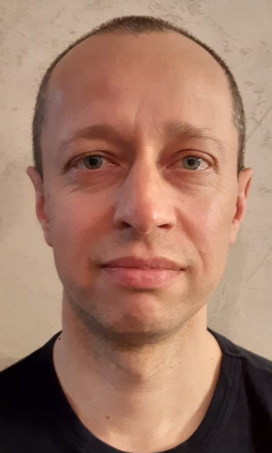

rsschool-cv
Aleksandr Shatsman
Contacts
- Email:shacman@mail.ru
- Phone:+79272123070
Education
Togliatti Polytechnic Institute (1992-1997)
Summary
I live in the city of Togliatti. I work in the company "Compass", from 1997 to the present.
I started as a storekeeper, then worked as a warehouse Manager.
Not seeing further development, he moved to sales Manager and rose to head of Department.
About me
My strengths are: collected, punctual, efficient, conscientious.
I just started learning programming and layout.
I’m eager to master the specialty of a programmer.
I have never studied English, but now I’m studying it in parallel.